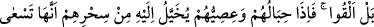
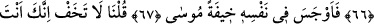
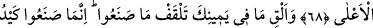
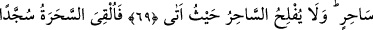
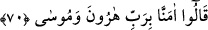
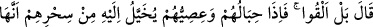

SİHİRBAZLAR
SECDEYE KAPANDILAR
65. Dediler ki: “Ey Mûsâ! Ya sen at veya önce atan biz olalım.”
66. “Hayır, siz atın.” dedi. Bir de baktı ki, büyüleri sayesinde ipleri ve sopaları,
kendisine gerçekten koşuyor gibi görünüyor.
67. Mûsâ, birden içinde bir korku duydu.
68. Dedik ki: “Korkma! Üstün gelecek olan kesinlikle sensin.
69. Sağ elindekini at da, onların yaptıklarını yutsun. Yaptıkları, sadece bir büyücü
hilesidir. Büyücü ise, nereye varsa (ne yapsa) iflah olmaz.”
70. Bunun üzerine sihirbazlar secdeye kapandılar; “Hârun’un ve Mûsâ’nın
Rabbine îman ettik” dediler.
Sihirbazlar hilelerini kurduktan, belirlenen yere geldikten ve sıra sıra olduktan sonra
“Dediler ki: “Ey Mûsâ!” elindeki asayı yere “Ya sen at veya önce atan biz olalım.”
Yani hangimizin önce atacağını sen belirle.
Bir görüşe göre sihirbazlar içleri boşaltılmış ve civa ile doldurulmuş üç yüz çeki ip
ve urgan hazırlayıp meydana getirdiler ve bu sözü söylediler.
Burada işâret vardır ki sihirbazlar asâyı önce kimin atacağının belirlenmesini Mûsâ
(a.s.)’a bırakarak ve onu öne geçirerek onu aziz kılınca Allah Teâlâ da onları hakîkî
îmanla aziz kıldı. Böylece onlar îmân nuruyla Mûsâ’nın mûcizesini gördüler; taklid
yoluyla değil, tahkik yoluyla îman ettiler. İşte “Bana bir karış yaklaşana ben bir kulaç
yaklaşırım”[85] kudsî hadîsinin hakîkati budur. Allâh’ın aziz kıldığını aziz kıldıkları için
Allah da onları îmân edip kendine yaklaştırmakla aziz kıldı. Aynı şeklide Mûsâ (a.s.) da
atma sırasını önce onlara vererek onları şereflendirdi.